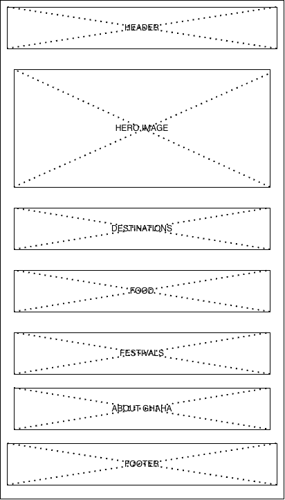
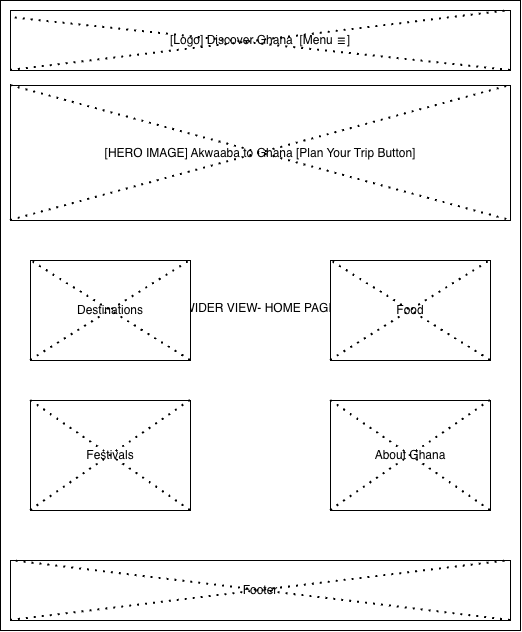

Site Plan
Discover Ghana
The name is clear, inviting, and easy to remember. It tells visitors exactly what the site does, discover the people, places, food, and history of Ghana.
Possible domain:discoverghana.org
Site Purpose
Discover Ghana is a tourism and culture guide for anyone who want to visit Ghana or learn about it from home. The site provides information about top destinations, Ghanaian culture and festivals, traditional food, travel tips, and history.
The site will include destination guides for Accra, Kumasi, and Cape Coast, a food guide, a festival calender, and a trip planner form where visitors can ask for travel advice.
Scenarios
- What are the must-see places to visit in Ghana for a first-time traveler?
- What traditional Ghanaian foods should i try, and where can i find them?
- When are the best festivals in Ghana, and how much does a trip to Ghana cost?
Color Schema
Colors are inspired by the Ghana flag and Kente cloth.
#006B3F
Header, footer, headings
#FCD116
Accents, buttons
#FFF8E7
Page background
#CE1126
Links, highlights
#1A1A1A
Paragraph text
Typography
Headings: Merriweather
Merriweather is bold and traditional. It is used for all headings to give the site a strong, storytelling feel.
Akwaaba — Welcome to Ghana
Body: Open Sans
Ghana is known for its warm hospitality, rich history, vibrant markets, and beautiful beaches from Accra to Cape Coast.
Open Sans is clean and easy to read. It is used for paragraphs and navigation.
Wireframe
Home Page - Mobile View

Home Page - Desktop View
